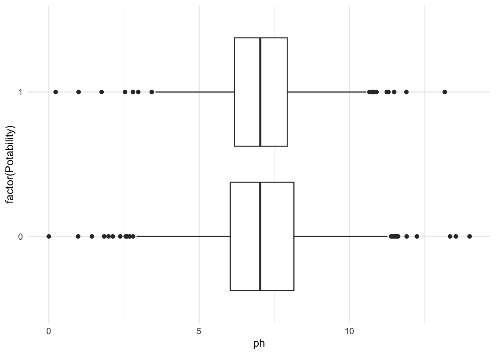
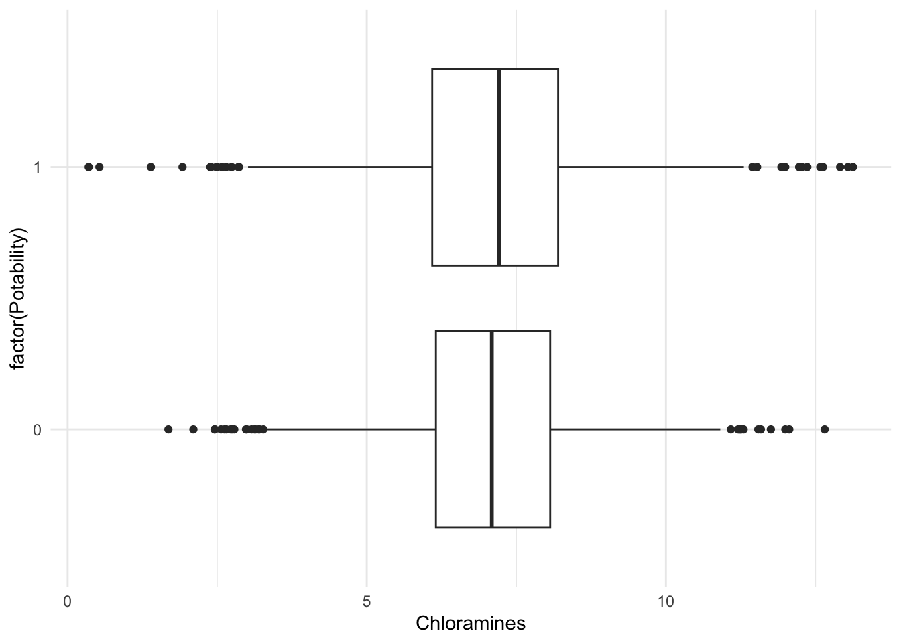

water_protection3 <- water_protection2 %>%
group_by(Potability) %>%
summarize(total = sum(n())) %>%
mutate(percentage = 100*total/sum(total)) In collaboration with classmates in our intro to statistics course, we centered our final project around safety of water safety, as in what makes it same or not.
We applied statistical models to answer our question, what makes water unsafe? Our final conclusion was that increases in Ph level are correlated with lower water potability.
Below will be our final paper, as well as our models
Collaborators
Andrew Yacoub, Iris Guo, Jesus Castillo Palacios, and Elinai Alicia Severiano Perez
Products
Introduction Throughout the world, not all water is safe to consume. With water being a basic human necessity, it is important to understand the potability of water. The reason being that everyone drinks water and if it is not safe to drink, there could easily be an increase in public health concern due to the health deterioration that unsafe water could bring. Throughout our study we will research how pH levels affect water potability in different water sources around the world. The research also considered chloramine levels as that may also affect water potability. For chloramine levels, the study researched how different levels of chloramines affects pH levels and as a result changes water potability. It is crucial to understand which areas are most susceptible to unsafe water through their pH and chloramine levels before being able to assist in fixing this public health issue.
Dataset and Exploratory Data Analysis The water potability data set used focuses on 3276 different bodies of water from all over the world and how safe it is to drink their water. 491 of the cases had variables that were not available and so they weren’t used in the analysis in order to not have them influence the data. Water potability can be measured with 10 different variables, but this study uses pH and chloramine levels as the 2 variables of interest. This is done because of how much more important these variables are to water potability. Water acidity is measured by pH levels yet there are no set unit labels. The pH levels in this dataset range from 3.5 - 10.5 where the lower pH level indicates a more acidic water. The World Health Organization (WHO) recommends a maximum permissible limit of pH from 6.5 - 8.5. It is important to note that a pH level of 7 indicates a body of water that is not acidic nor basic. Chloramines are disinfectants used to treat water for safe drinking. This variable is a concentration unit with the unit labels being parts per million (ppm) as chloramine levels range from 4 - 10 ppm. Something to note with this variable is that there can be outliers that don’t fit the 4 - 10 ppm range for chloramines or the 3.5 - 10.5 for the pH levels. The data set was supplied to us by Kaggle from research conducted by Creative Commons and made public for all to use.
Methods While looking at our water potability data set, we noticed that some values within the pH column were missing. Thus to attribute this we cleaned up our data set by taking those variables out of our dataset, which as a result were 491 variables that we took out of our dataset. The reasoning behind this is because we cannot simply put a replacement value towards those variables, as they will skew our results in ways that might not fully be representative of our actual results, as in the true values of pH. For our study we used the following multiple logistic regression model: log (odds(Potability=1 | ph, Chloramines) = β0 + β1ph + β2Chloramines + β3(phChloramines) We decided on such a model because the logistic aspect of it accounted for our outcome (or Y) being either 0 or 1 , as in the water potability is either not safe to drink or it is safe to drink. In addition we decided on having multiple variables because we wanted to account for Chloramines influencing potability. We noticed this when we fit an interaction term to our model and noticed a difference in our results. Thus pushing us to believe that Chloramines were potential cofounders and needed to be taken into account into our model. We decided on only including those two variables because if we took into account the rest of the variables we would have studied results that only came about in situations where all the other variables were accounted for, which is really specific and not broad enough to make conclusions that could be used for our population overall. Additionally, after looking at different visuals with different variables, we concluded that ph and Chloramines were the most influential towards Potability of water. Our population parameter is a beta parameter. Our question involves water quality associated with pH levels so our parameter represents the average change in water potability associated with a unit increase in pH (β1). We also wanted to see if chloramines could be used as an interaction term and have an effect on pH levels (and possibly water quality) so this is another population parameter (β2). Since we’re using chloramines as an interaction term, we also have a β3 (pHchloramines).
Results After cleaning our dataset, by taking out the variables/waterways that did not contain a pH value, we found that out of 2785 waterways , 60.5% of the waterways were not safe to drink and 39.5 % were safe to drink (all these values are found in Table 1). We also then calculated the median of pH and Chloramines, which were 7.037 and 7.130 respectively. When looking at both Figure 1 and Figure 2, we can see that it supports the numeral values found from the R-code. The median line of the boxplot lines up around 7 for both the pH and Chloramines. The standard deviation was found to be 1.594 for pH and 1.583, demonstrating a normal distribution of values. In Table 2, we can see the small p-values for all the variables, representing a p-value of <0.001. We decided that the multiple logistic regression model made the most sense with our dataset, setting potability as Y and interaction terms of pH and Chloramines. Looking at Table 3, we can see that β1 and β2 are negatively associated with the outcome. This means that increasing pH units, while holding units of chloramines constant, or increasing the units of chloramine, while holding pH units constant, decreases water potability. After realizing this, it seems that there is a negative correlation between pH to potability and from chloramines to potability. After finding our population parameter, we decided that we’re going to make a logistic regression model and use the summary function of that model to estimate the population parameter. We can also exponentiate the estimates since it’s a logistic regression model. Our null hypothesis (H0), where β1 = 0 or eβ1 = 1 , is the odds ratio of the water being potable associated with an increase in pH by 1 unit, holding chloramine levels constant, is 1. The significance threshold would be beta. In context, type 2 error is more problematic because this occurs to a smaller sample population that might not account for various other factors that impact water potability, which is beyond ph and Chloramines. We used the central limit theorem to calculate the confidence interval, resulting in the calculation of (-0.818, -1.320). The exponentiated result is displayed as (0.267, 0.437) . Based on our multiple logistic regression model, we estimate that the beta hat for the potability of the waterways in our study is 0.343 lower in relative value on average when the level of ph is increased by 1, considering that the chloramine ppm level is the same. Based on a 95% confidence interval, we concluded that the odds ratio of the water being potable with an increase in pH by 1 unit, holding chloramine levels constant, is between 0.267 and 0.437, associated with an increase in pH level. Based on these results, it is clear that varying pH values impact the potability of the water bodies. Our p-value, the ratio of beta hats means, is very small (<0.001). This means that it is very likely that we reject the null hypothesis and conclude that there is an association between ph and potability, after accounting for Chloramines. Using chloramines as an interaction term in our model, it would be very surprising to see our estimate if the null hypothesis is true since the p-value is very small. This means that it is very likely that we reject the null hypothesis due to the presence of a negative association between pH levels and water potability. This means that the odds ratio of the water being potable associated with an increase in pH by 1 unit, holding chloramine levels constant, is NOT 1. Therefore, there is an association between pH levels and water quality.
Discussion/Conclusion The study conducted took pH and chloramine levels into account for water potability in different bodies of water around the world. The results show that there is a negative association between pH and water potability which means that increasing pH levels decreases water potability. It is important to discuss the possible limitations of this study. A possible limitation in the data is that although we had data from bodies of water all over the world, a number of the cases didn’t have information from all of the variables. This could have affected the results by not including all of the possible data which is a form of information bias. This issue can also be seen as a sampling bias as we didn’t use the data from those bodies of water which means we didn’t use the full sampling size possible. Limitations in the statistical model could be that we didn’t use all of the variables presented to us. For this research, the 3 variables used were pH levels, chloramines, and water potability. The data set presented us 10 variables and so for potential future work, we could improve the study by looking at all 10 variables. We can not be sure that the other 7 variables didn’t affect the water quality in certain bodies of water. To conclude the study, we would like to touch on the ethics behind the research and what was learned. The data provided was with the intent that anyone could use it which is why it was easily accessible. This information can help all people world wide as it brings awareness to the different water quality and how it is an issue that not everyone has access to safe drinking water. The study shows how both an increased pH level and chloramine level reduces the quality of drinking water. This highlights the need for universal safe water and the magnitude of this public health issue. This study can be applied to the entire world as every living thing needs drinkable water. Our team conducted this study in hopes that action can be taken to ensure everyone has access to this basic human need.
Tables and Figures
Potability Percentage
Table 1. Summaries of key values. Potability is a binary variable (0 or 1). Results are presented as sample mean and median, minimum and maximum, and sample standard deviation and IQR.
ph<- water_protection2%>%
select(ph) %>%
na.omit() %>%
summarize(mean(ph), median(ph) ,min(ph), max(ph), IQR(ph) , sd(ph))
head(ph) mean(ph) median(ph) min(ph) max(ph) IQR(ph) sd(ph)
1 7.080795 7.036752 0 14 1.968974 1.59432Chloramines<- water_protection2%>%
select(Chloramines) %>%
summarize(mean(Chloramines), median(Chloramines) ,min(Chloramines), max(Chloramines), IQR(Chloramines) , sd(Chloramines))
head(Chloramines) mean(Chloramines) median(Chloramines) min(Chloramines) max(Chloramines)
1 7.126535 7.130161 0.5303513 13.127
IQR(Chloramines) sd(Chloramines)
1 1.980514 1.590114Numerical Summaries
Turbidity<- water_protection%>%
select(Turbidity) %>%
summarize(mean(Turbidity), median(Turbidity) ,min(Turbidity), max(Turbidity), IQR(Turbidity) , sd(Turbidity))
head(Turbidity) mean(Turbidity) median(Turbidity) min(Turbidity) max(Turbidity)
1 3.966786 3.955028 1.45 6.739
IQR(Turbidity) sd(Turbidity)
1 1.060609 0.7803824Potability<-water_protection2 %>%
filter(Potability =="0")
head(Potability) ph Chloramines Potability
1 3.716080 6.635246 0
2 8.099124 9.275884 0
3 8.316766 8.059332 0
4 9.092223 6.546600 0
5 5.584087 7.544869 0
6 10.223862 7.513408 0Potability2<-water_protection2 %>%
filter(Potability =="1")
head(Potability2) ph Chloramines Potability
1 9.445130 9.444471 1
2 9.024845 8.016423 1
3 6.800119 9.501695 1
4 7.174135 7.681806 1
5 7.657991 6.289065 1
6 8.322987 8.827061 1Table 2. Results from multiple linear regression predicting Y with pH, Chloramines, and their interaction. If a p-value is really small, it should read “< 0.001”.
mod2 <- glm (Potability ~ ph + Chloramines +ph* Chloramines, family= binomial, data = water_protection2)
summary(mod2)
Call:
glm(formula = Potability ~ ph + Chloramines + ph * Chloramines,
family = binomial, data = water_protection2)
Deviance Residuals:
Min 1Q Median 3Q Max
-1.7660 -1.0060 -0.8975 1.3328 2.1705
Coefficients:
Estimate Std. Error z value Pr(>|z|)
(Intercept) 6.92580 0.90586 7.646 2.08e-14 ***
ph -1.06909 0.12571 -8.505 < 2e-16 ***
Chloramines -1.02116 0.12373 -8.253 < 2e-16 ***
ph:Chloramines 0.14855 0.01713 8.673 < 2e-16 ***
---
Signif. codes: 0 '***' 0.001 '**' 0.01 '*' 0.05 '.' 0.1 ' ' 1
(Dispersion parameter for binomial family taken to be 1)
Null deviance: 3737.9 on 2784 degrees of freedom
Residual deviance: 3647.4 on 2781 degrees of freedom
AIC: 3655.4
Number of Fisher Scoring iterations: 4Table 3. Table of regression coefficient estimates
coef(mod2) (Intercept) ph Chloramines ph:Chloramines
6.925800 -1.069087 -1.021159 0.148550 exp(coef(mod2)) (Intercept) ph Chloramines ph:Chloramines
1018.2080759 0.3433219 0.3601772 1.1601508 Confidence interval
-1.069087 + (2*0.12570569 )[1] -0.8176756-1.069087 - (2*0.12570569 )[1] -1.320498Figure 1. Boxplot describes the relationship between potability and pH
water_protection %>%
filter(!is.na(Potability)) %>%
ggplot(aes(y= factor(Potability), x = ph) )+
geom_boxplot() +
theme_minimal() Warning: Removed 491 rows containing non-finite values (`stat_boxplot()`).
Figure 2. Boxplot describes the relationship between potability and Chloramines
water_protection %>%
filter(!is.na(Potability)) %>%
ggplot(aes(y = factor(Potability), x = Chloramines) )+
geom_boxplot() +
theme_minimal() 